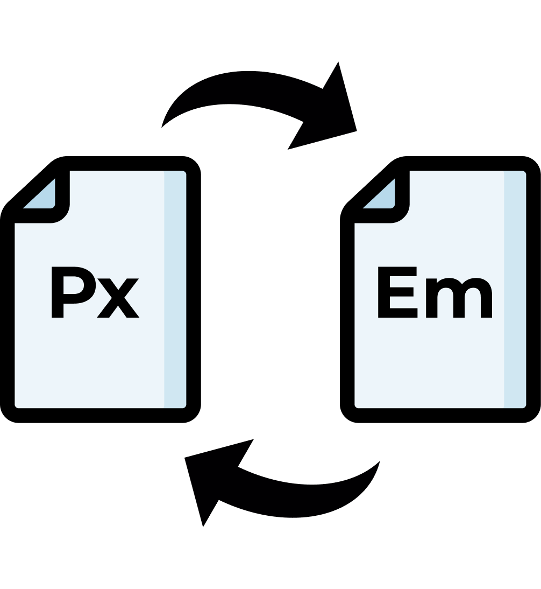

Deskripsi
Website "Pixel Em" adalah aplikasi web sederhana yang memungkinkan pengguna untuk mengkonversi ukuran antara satuan piksel (px) dan em. Alat ini dirancang untuk memudahkan desainer web, pengembang, dan siapa saja yang ingin melakukan konversi ukuran dengan cepat dan akurat antara dua satuan pengukuran yang sering digunakan dalam pengembangan web.
Fitur Utama
- Konversi Dinamis: Pengguna dapat mengkonversi nilai dari piksel ke em dan sebaliknya secara real-time.
-
Mode Edit dan Kunci: Aplikasi ini memiliki
dua mode:
- Mode Edit: Memungkinkan pengguna untuk mengubah nilai dasar konversi (default).
- Mode Kunci: Mengunci nilai dasar konversi sehingga pengguna hanya dapat memasukkan nilai dalam piksel atau em untuk konversi.
- Input Validasi Otomatis: Input yang tidak valid atau kosong akan dinonaktifkan untuk menjaga akurasi konversi.
- Antarmuka Pengguna yang Sederhana: Desain antarmuka pengguna yang mudah digunakan dan intuitif, dengan ikon edit dan kunci untuk mengganti mode.
Cara Penggunaan
-
Memulai Konversi:
- Saat pertama kali membuka halaman, alat ini akan berada dalam Mode Kunci secara default, di mana input untuk piksel dan em akan tersedia untuk digunakan, dan nilai dasar konversi dikunci.
-
Mengubah Nilai Dasar Konversi:
- Klik ikon ("") untuk memasuki Mode Edit.
- Setelah mode ini aktif, input dasar akan terbuka untuk dimodifikasi. Pengguna dapat memasukkan nilai baru untuk dasar konversi.
- Input untuk piksel dan em akan dikunci selama proses ini.
- Setelah nilai baru dimasukkan, klik ikon ("") untuk kembali ke Mode Kunci.
-
Melakukan Konversi:
- Masukkan nilai dalam input piksel untuk mengkonversi nilai tersebut ke dalam em.
- Masukkan nilai dalam input em untuk mengkonversi nilai tersebut ke dalam piksel.
- Hasil konversi akan muncul secara otomatis di input yang lain.
Dengan fitur-fitur dan cara penggunaan yang intuitif, "Pixel Em" adalah alat yang tepat bagi siapa saja yang membutuhkan solusi cepat dan mudah untuk konversi satuan ukuran dalam pengembangan web.